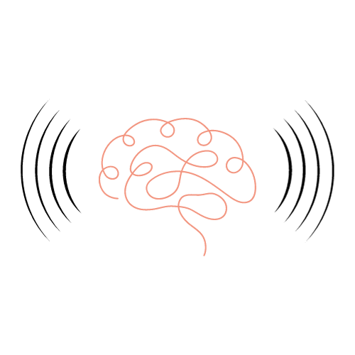
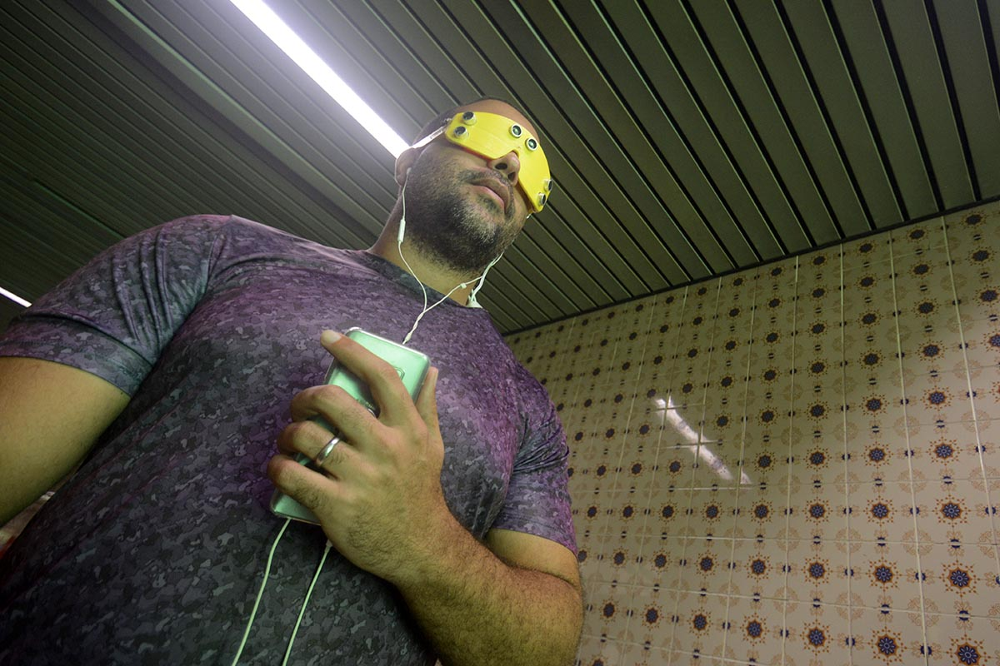

Synesthesia Vision
“De um aparelho ocular batizado de Synesthesia Vision, nasceram a esperança e a vontade de estudantes e professores em propiciar, gradativamente, um recurso que pode dar mais autonomia a pessoas com deficiência visual. O objeto utiliza um recurso chamado de Áudio Binaural Tridimensional que é capaz de transformar distâncias em sons.”
Leia mais: Sons da inclusão: grupo cria óculos 3D para cegos
IFPE Acontece Synesthesia Vision
Descrição do vídeo
Mas o que seria o áudio binaural?
O áudio Binaural é um recurso imersivo que localiza o áudio em volta de quem está ouvindo, simulando como um ser humano consegue captar os sons naturalmente. É uma técnica de gravação e reprodução sonora bastante interessante, pois, com apenas dois microfones, é possível criar o efeito de som ambiente.
Alguns áudios binaurais também são usados em terapias; tais áudios têm o poder para acessar em uma certa frequência o subconsciente humano, podendo alterar coisas no corpo como a liberação de endorfina, também usados para meditação.
Primeiros Testes
José Carlos Amaral, 35 anos. Ou Carlão, como é carinhosamente chamado pelos amigos, possui total deficiência visual. Auxiliado pelo óculos do projeto, em versão para teste, pôde caminhar de forma independente e cuidadosa pelo Campus Recife do Instituto Federal de Pernambuco.
No vídeo a seguir é contado do professor que, apesar das dificuldades, conseguiu superar tudo.